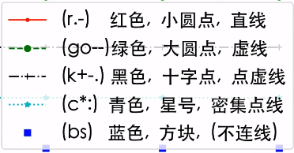
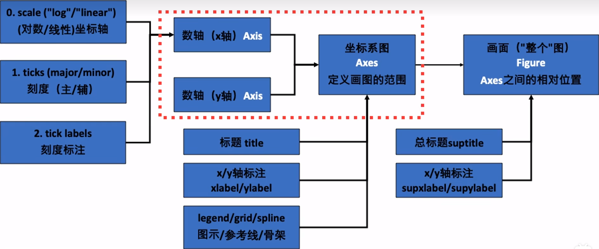

B 站视频：《十分钟讲解 Matplotlib 的核心内容与基本逻辑》
Matplotlib_examples.ipynb
# 入门
# 基本设置
| import matplotlib.pyplot as plt |
| import numpy as np |
| |
| |
| |
| matplotlib.rcParams['font.family'] = ['SimHei'] |
| matplotlib.rcParams['axes.unicode_minus'] = False |
| |
| matplotlib.rcParams['figure.dpi'] = 200 |
| |
| matplotlib.rcParams['axes.facecolor']='white' |
| matplotlib.rcParams['savefig.facecolor']='white' |
| |
| x = [1, 2, 3, 4] |
| y1 = [4, 8, 2, 6] |
| y2 = [10, 12, 5, 3] |
| |
| plt.plot(x, y1) |
| plt.plot(x, y2) |
| plt.show() |
# 设置标签
| plt.plot(x, y1, "ro--", label='abc') |
| plt.plot(x, y2, "bs", label='def') |
| |
| plt.title('sample') |
| plt.xlabel('time') |
| plt.ylabel('price') |
| plt.legend() |
# 设置 x 轴和 y 轴范围
| plt.xticks([1, 2, 3, 4]) |
| plt.yticks(np.arange(2, 13, 1)) |
| plt.grid() |
# 局部显示
| plt.xlim(2.5, 4.5) |
| plt.ylim(1.5, 6.5) |
# 更多线段格式

更多格式参考：https://matplotlib.org/stable/api/_as_gen/matplotlib.pyplot.plot.html
# 更多图片样式
https://matplotlib.org/stable/plot_types/index.html
# 结构

# 画两张图
| plt.figure(figsize=(10, 6)) |
| |
| plt.subplot(211) |
| plt.bar(x, y1) |
| |
| plt.subplot(212) |
| plt.plot(x, y2, "b^--") |
| |
| plt.show() |
# 使用面向对象 OOP 精准语法
| fig, axes = plt.subplots(2, 1, figsize=(6, 6)) |
| |
| axes[0].bar(x, y1) |
| axes[1].plot(x, y2, "b^--") |
# 画多个图
| fig, axes = plt.subplots(2, 2, figsize=(6, 6)) |
| |
| axes[0, 0].bar(x, y1) |
| axes[0, 1].plot(x, y2, "b^--") |
| ax = axes[1, 0] |
| ax.scatter(x, np.array(y2) - np.array(y1), |
| s=[10, 20, 50, 100], |
| c=["r", "b", "c", "y"], |
| ) |
| axes[0, 0].set_title("Bar") |
| axes[0, 1].set_title("Plot") |
| ax.set_ylabel("y2-y1") |
# 更多设置
| fig, axes = plt.subplots(2, 2, figsize=(6, 6), |
| facecolor="lightblue", |
| sharex=True, |
| sharey=True, |
| ) |
| axes[1, 1].remove() |
| axes[0, 0].plot(x, y1, "r+-") |
| |
| |
| fig.suptitle("Four Subplots") |
| fig.supylabel("y1") |
| fig.supxlabel("x") |
# 画 3D 图
| |
| ax = fig.add_subplot(2, 2, 4, |
| projection='3d', facecolor="grey") |
| ax.stem(seasons, stock1, stock2-stock1) |
| ax.stem(seasons, stock1, stock2-stock1, |
| linefmt='k--', basefmt='k--', |
| bottom=10, orientation='y') |
| ax.plot_surface(np.array([1,1,4,4]).reshape(2,2), |
| np.array([2.5,10,2.5,10]).reshape(2,2), |
| np.array([0]*4).reshape(2,2), |
| alpha=0.2, color='red') |
| ax.plot_surface(np.array([1,1,4,4]).reshape(2,2), |
| np.array([10]*4).reshape(2,2), |
| np.array([-2.5,8,-2.5,8]).reshape(2,2), |
| alpha=0.2, color='black') |
| ax.set_xlabel("季度(x)") |
| ax.set_ylabel("股票1(y)") |
| ax.set_zlabel("差价(z)") |
# 补充设置
| |
| axes[1, 0].set_facecolor('grey') |
| axes[1, 0].patch.set_alpha(0.2) |
| axes[0, 0].set_facecolor('red') |
| axes[0, 0].patch.set_alpha(0.2) |
| plt.tight_layout() |
# 常用工作流程
# 导入包
| |
| import matplotlib.pyplot as plt |
| import matplotlib as mpl |
| import numpy as np |
# 查询所有画图整体风格
| |
| |
| plt.style.use('default') |
| plt.plot(np.random.randn(50)) |
| plt.title("default style") |
| |
| plt.show() |
| |
| plt.style.use('ggplot') |
| plt.plot(np.random.randn(50)) |
| plt.title("ggplot style") |
| |
| plt.show() |
| |
| plt.style.use('seaborn-dark') |
| plt.plot(np.random.randn(50)) |
| plt.title("seaborn-dark") |
| |
| plt.show() |
| plt.style.use('default') |
# 查询当前的一些画图属性设置
| |
| print(mpl.rcParams.get('figure.figsize')) |
| print(mpl.rcParams.get('font.size')) |
# 查询当前计算机中 matplotlib 的可用字体
| |
| import matplotlib.font_manager as fm |
| |
| fm._load_fontmanager(try_read_cache=False) |
| fpaths = fm.findSystemFonts(fontpaths=None) |
| |
| exempt_lst = ["NISC18030.ttf", "Emoji"] |
| skip=False |
| for i in fpaths: |
| |
| for ft in exempt_lst: |
| if ft in i: |
| skip=True |
| if skip==True: |
| skip=False |
| continue |
| f = matplotlib.font_manager.get_font(i) |
| print(f.family_name) |
# 一些常用设定参数
| import matplotlib as mpl |
| |
| |
| rc = {"font.family" : "Times New Roman", |
| "mathtext.fontset" : "stix", |
| } |
| mpl.rcParams.update(rc) |
| |
| mpl.rcParams['figure.dpi'] = 300 |
| |
| mpl.rcParams['axes.facecolor'] = 'white' |
| mpl.rcParams['savefig.facecolor'] = 'white' |
| |
| plt.rcParams['figure.constrained_layout.use'] = True |
# 中英文 / 数学符号混排
| |
| fig, ax = plt.subplots() |
| |
| st_font = fm.FontProperties(fname="/System/Library/Fonts/Supplemental/Songti.ttc") |
| |
| |
| ax.set_xlabel(r'乌龟烏龜/密度$\mathrm{kg/m}^3$', |
| fontname = 'Heiti TC', fontsize=20) |
| ax.text(0.2, 0.8, r'乌龟烏龜/黑体 $\mathrm{Times New Roman}$', |
| fontname='Heiti TC', fontsize=20) |
| |
| ax.text(0.2, 0.6, r'乌龟烏龜/宋体 $Times New Roman$', |
| fontproperties=st_font, fontsize=30) |
| plt.ylim(0.5, 0.9) |
| |
| |
| plt.show() |
# 复用代码 / 函数
| |
| x = np.linspace(0, 10, 100) |
| y1 = np.cos(x) |
| y2 = np.sin(x) |
| y3 = np.tanh(x) |
| |
| |
| |
| def plot_time_series(x, y, fmt, lab="", ax=None): |
| if ax is None: |
| fig, ax = plt.subplot() |
| ax.plot(x, y, fmt, label=lab) |
| |
| ax.set_xlabel("time") |
| ax.xaxis.set_major_locator(plt.MultipleLocator(np.pi / 2)) |
| ax.xaxis.set_minor_locator(plt.MultipleLocator(np.pi / 4)) |
| labs = ax.xaxis.get_ticklabels() |
| ax.xaxis.set_ticklabels([r"{:.2f}$\pi$".format(i/2) for i, l in enumerate(labs)]) |
| return ax |
| |
| |
| fig, axes = plt.subplots(2, 1, figsize=(6, 3), |
| sharex=True, facecolor="white") |
| |
| plot_time_series(x, y1, 'b-', r'$y=sin(x)$', ax=axes[0]) |
| plot_time_series(x, y2, 'r:', r'$y=cos(x)$', ax=axes[0]) |
| |
| plot_time_series(x, y3, 'g--', ax=axes[1]) |
| |
| |
| plt.show() |
# 很多格式可以后期再函数外处理
| |
| def plot_time_series(x, y, fmt, lab="", ax=None): |
| if ax is None: |
| fig, ax = plt.subplot() |
| ax.plot(x, y, fmt, label=lab) |
| |
| ax.set_xlabel("time") |
| ax.xaxis.set_major_locator(plt.MultipleLocator(np.pi / 2)) |
| ax.xaxis.set_minor_locator(plt.MultipleLocator(np.pi / 4)) |
| labs = ax.xaxis.get_ticklabels() |
| ax.xaxis.set_ticklabels([r"{:.2f}$\pi$".format(i/2) for i, l in enumerate(labs)]) |
| return ax |
| |
| fig, axes = plt.subplots(2, 1, figsize=(6, 3), |
| sharex=True, facecolor="white") |
| plot_time_series(x, y1, 'b-', r'$y=sin(x)$', axes[0]) |
| plot_time_series(x, y2, 'r:', r'$y=cos(x)$', axes[0]) |
| plot_time_series(x, y3, 'g--', ax=axes[1]) |
| |
| |
| axes[0].set_xlabel("") |
| axes[0].legend(loc="upper right") |
| axes[1].legend(loc="upper right") |
| axes[0].grid() |
| axes[1].grid() |
| |
| |
| plt.show() |
# 后期调整
| |
| fig, axes = plt.subplots(2, 1, figsize=(6, 3), |
| sharex=True, facecolor="white") |
| plot_time_series(x, y1, 'b-', r'$y=sin(x)$', axes[0]) |
| plot_time_series(x, y2, 'r:', r'$y=cos(x)$', axes[0]) |
| plot_time_series(x, y3, 'g--', ax=axes[1]) |
| |
| axes[0].set_xlabel("") |
| |
| axes[1].lines[0].set_label(r"$y=tanh(x)$") |
| axes[0].legend(loc="upper right") |
| axes[1].legend(loc="upper right") |
| axes[0].grid() |
| axes[1].grid() |
| |
| plt.savefig("images/pic3_4.png", facecolor=fig.get_facecolor()) |
| plt.show() |
# 交互式画图
| import matplotlib.pyplot as plt |
| from matplotlib import cm |
| from matplotlib.ticker import LinearLocator |
| import numpy as np |
| %matplotlib widget |
| |
| |
| |
| fig, ax = plt.subplots(subplot_kw={"projection": "3d"}) |
| |
| X = np.arange(-5, 5, 0.25) |
| Y = np.arange(-5, 5, 0.25) |
| X, Y = np.meshgrid(X, Y) |
| R = np.sqrt(X**2 + Y**2) |
| Z = np.sin(R) |
| |
| |
| surf = ax.plot_surface(X, Y, Z, cmap=cm.coolwarm, |
| linewidth=0, antialiased=False) |
| |
| |
| ax.set_zlim(-1.01, 1.01) |
| ax.zaxis.set_major_locator(LinearLocator(10)) |
| |
| ax.zaxis.set_major_formatter('{x:.02f}') |
| |
| |
| fig.colorbar(surf, shrink=0.5, aspect=5) |
| |
| |
| plt.show() |